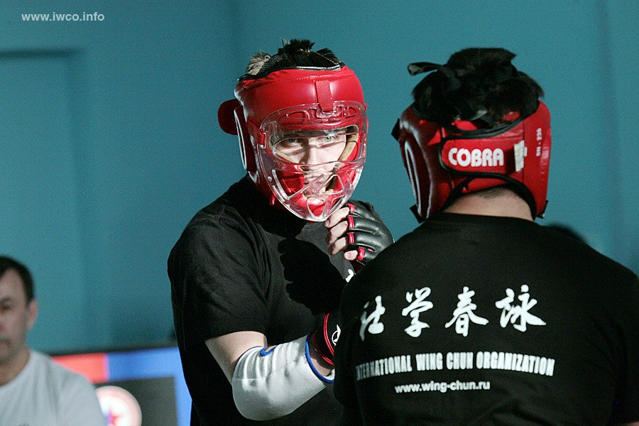

Что такое Вин Чун?
- Вин Чун это практичная, строго научная и компактная система, построенная на логике и постоянном беспристрастном анализе теории и практики реального поединка.
Наиболее важная концепция - не противопоставление силы против силы, которая позволяет бойцу одолевать физически более сильных противников.
Развитие физической силы приветствуется (как и в любом контактном единоборстве), но не является главным фактором обучения. Основа Вин Чун - это именно технические действия, приводящие к победе. Благодаря объективным критериям оценки обучения, для каждого уровня и регулярным аттестациям Вы всегда будете знать, когда закроете то или иной уровень обучения и начнете изучать новый.
До встречи в зале!
Расписание занятий
Расписание тренировок:
- Понедельник: 18:00 - 20:00
- Среда: 17:00 - 19:00
- Пятница: 19:00 - 21:00
Новости
Школа Wing Chun IWCO предлагает курс обучения по искусству Wing Chun...
